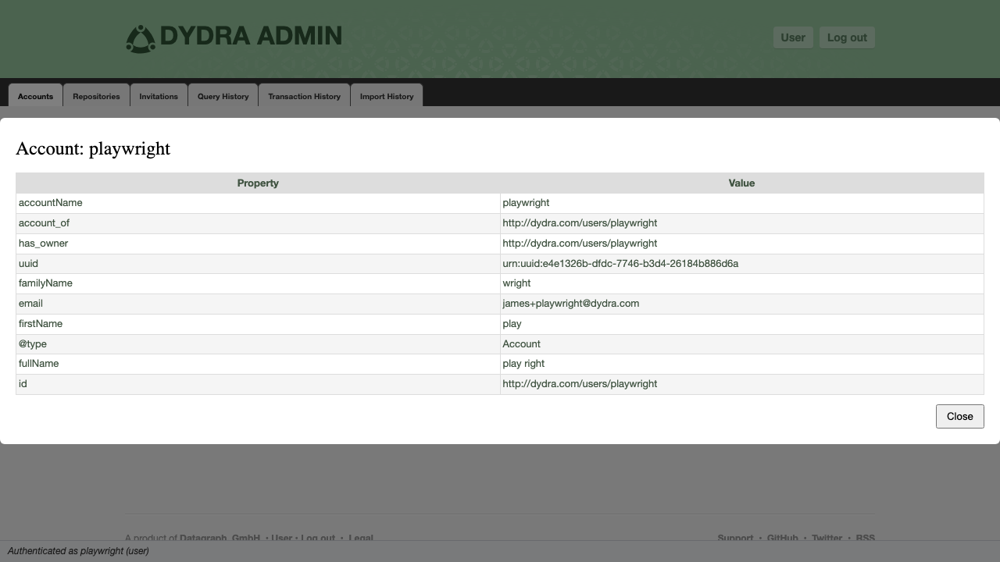
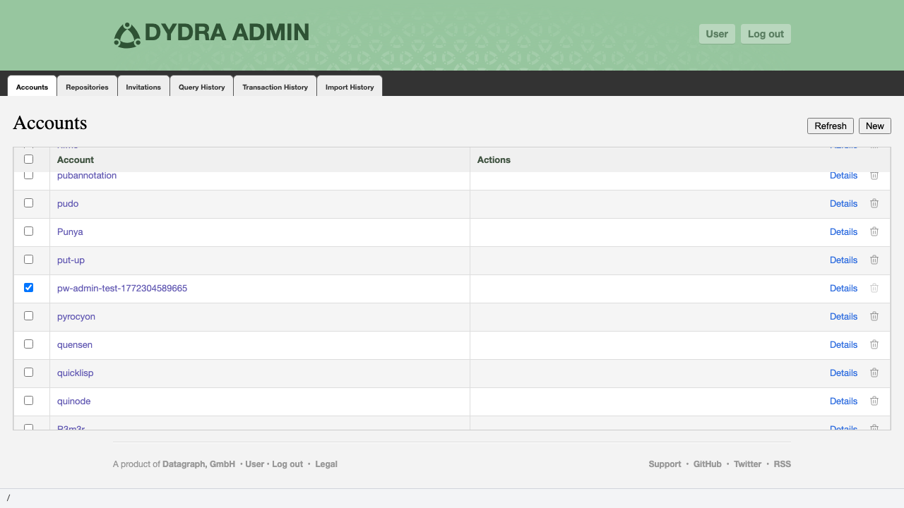

Dydra admin console · manual · 03
Account Operations
List, inspect, create, and remove accounts.
Dydra admin console · manual · 03
List, inspect, create, and remove accounts.
The Accounts tab is the leftmost tab of the admin dashboard and the first to load on page render. It displays the complete list of accounts registered in the system, retrieved from GET {host}/system/accounts. Accounts are presented in a table sorted alphabetically by account name (case-insensitive comparison).

Figure 3.1: The Accounts tab displaying the system account list.
| Column | Contents | Notes |
|---|---|---|
| Checkbox | Selection control | Checked accounts determine which repositories are fetched in the Repositories tab. See Section 2.5. |
| Account Name | The account identifier, rendered as a link | The link target is {host}/ui/user/{accountName} — the account's view in the user application. |
| Actions | Details link; Delete button (Admin only) | The Delete button is suppressed for operator-level sessions. |
| Control | Availability | Function |
|---|---|---|
| Refresh | Always | Re-fetches the complete account list from /system/accounts. Clears and rebuilds the table. |
| New | Admin only | Opens the New Account dialog. See Section 3.5. |
| Check All | Always | Toggles the selection state of all account checkboxes. Displays an indeterminate state when some but not all accounts are selected. |
The Details link on each row opens a modal dialog presenting the account's full configuration as a key-value table. The data is fetched from GET {host}/system/accounts/{accountName}/configuration. The accessToken property is excluded from the display.

Figure 3.2: The account details dialog.
Step 1
Click Details on the row of the account to inspect.
Step 2
The dialog opens, displaying all configuration properties in a two-column table (property name, value).
Step 3
Close the dialog by clicking the close button or clicking outside the dialog boundary.
Navigation to the account's repositories
To view repositories belonging to a specific account, check that account's checkbox and navigate to the Repositories tab. Direct links to the account in the user application are available via the account name link in the table.
New accounts are created from the New Account dialog.
Step 1
Click New in the tab controls. The New Account dialog opens.
Step 2
Enter the desired account name in the text field. Account names are case-sensitive identifiers and must conform to the naming constraints enforced by the system.
Step 3
Click Create (or press Enter). The application issues POST {host}/system/accounts with the supplied name.
Step 4
On success, the dialog closes and the new account is appended to the table. If the Repositories tab has been loaded, it is refreshed to reflect the new account's (initially empty) repository list.
Step 5
On error, the response message is displayed within the dialog. The dialog remains open for correction.
Account naming
The account name becomes part of the URL path for all of that account's repositories and views. Choose identifiers that are stable and meaningful; renaming accounts is not supported through this interface.
Account deletion is a permanent, irreversible operation. All repositories belonging to the account are also deleted.
Irreversibility
Deleting an account destroys all associated repositories, views, and data. This operation cannot be undone. Verify the account name before confirming.
Step 1
Click Delete on the row of the account to remove.
Step 2
A confirmation dialog appears, displaying the account name and requesting confirmation.

Figure 3.3: The deletion confirmation dialog.
Step 3
Confirm the deletion. The application issues DELETE {host}/system/accounts/{accountName}.
Step 4
The server response (in N-Triples format) is displayed briefly. The account is removed from the table. The Repositories tab, if loaded, is refreshed.
Account checkboxes serve a secondary function: they determine the scope of the Repositories tab. The relationship is defined as follows:
To view repositories for a specific subset of accounts: check exactly those accounts, then click the Repositories tab.